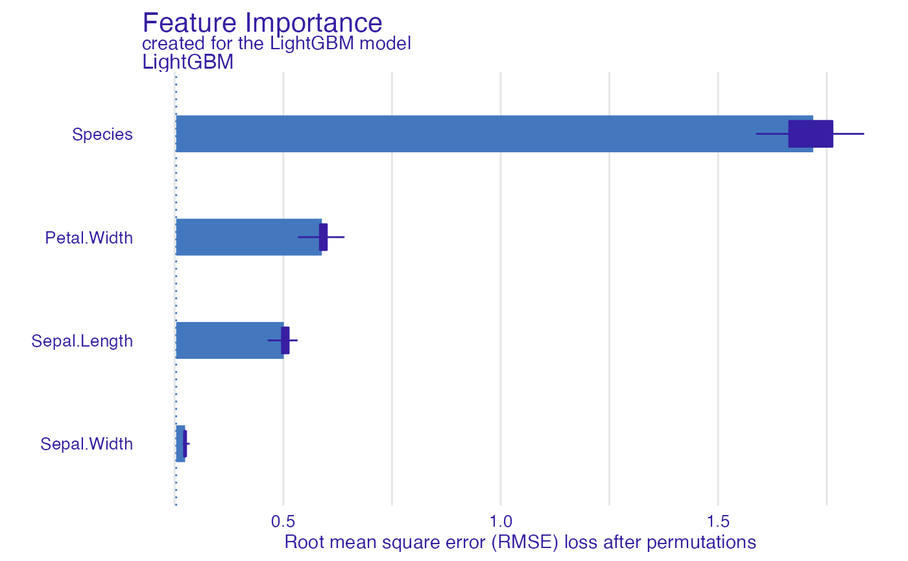
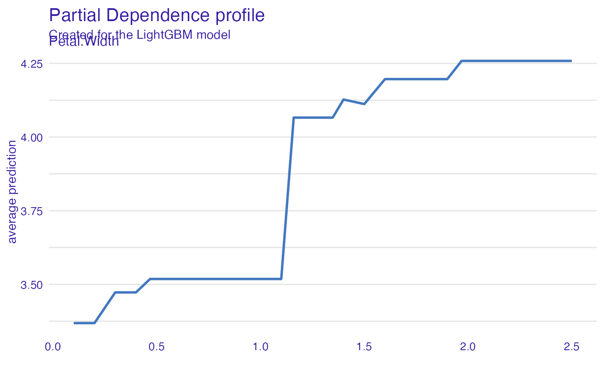
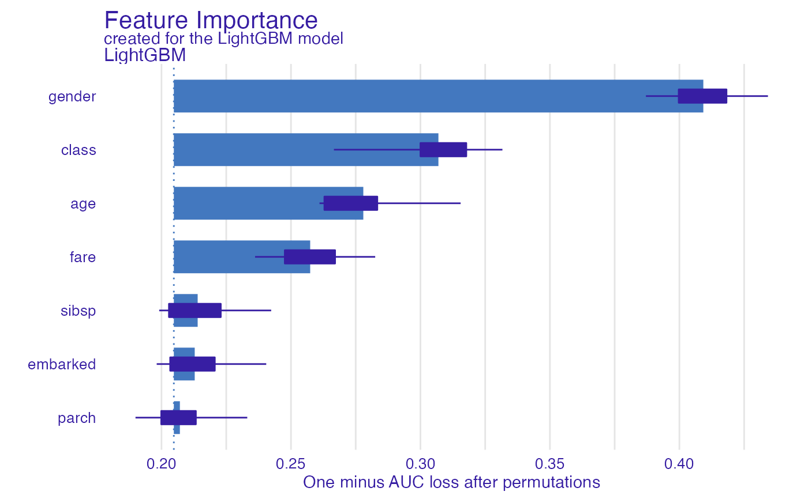

Function make_lightgbm automates the process of applying LightGBM model
for a dataset and simutaneously creates explainer from the use of DALEX package.
The created explainer can be further processed by functions for explanations.
make_lightgbm(data, target, type = "regression")
| data | data.frame, matrix, data.table or dgCMatrix - data will be used to run the LightGBM model. NOTE: data has to contain the target column. |
|---|---|
| target | character: name of the target column, placed in quotation marks. The input target name is compulsory to be one of column names of input data. |
| type | character: defining the task, placed in quotation marks. Two options for type: "regression" and "classification", particularly, binary classification. |
An object of the class explainer for LightGBM model with given data, target and defined type of problem.
Explanatory Model Analysis. Explore, Explain and Examine Predictive Models. https://ema.drwhy.ai/
# simple explainer for regression problem library(datasets) library(DALEX) data("iris") EXPLAINER <- make_lightgbm(iris,"Petal.Length",type="regression")#> Preparation of a new explainer is initiated #> -> model label : LightGBM #> -> data : 150 rows 4 cols #> -> target variable : 150 values #> -> predict function : lightgbm_predict #> -> predicted values : No value for predict function target column. ( default ) #> -> model_info : package Model of class: lgb.Booster package unrecognized , ver. Unknown , task regression ( default ) #> -> predicted values : numerical, min = 1.348557 , mean = 3.758 , max = 6.262391 #> -> residual function : difference between y and yhat ( default ) #> -> residuals : numerical, min = -0.808878 , mean = 1.082082e-08 , max = 0.6376088 #> A new explainer has been created!## Variable importance variable_importance_gbm <- model_parts(EXPLAINER,type="raw") plot(variable_importance_gbm)## Single variable: sv_gbm_petal_width <- model_profile(EXPLAINER, variable="Petal.Width",type="partial") plot(sv_gbm_petal_width)# simple explainer for classification problem library(DALEX) ## We will predict the survived state: 0 and 1 titanic_explainer <- make_lightgbm(titanic_imputed, "survived", "classification")#> Preparation of a new explainer is initiated #> -> model label : LightGBM #> -> data : 2207 rows 7 cols #> -> target variable : 2207 values #> -> predict function : lightgbm_predict #> -> predicted values : No value for predict function target column. ( default ) #> -> model_info : package Model of class: lgb.Booster package unrecognized , ver. Unknown , task regression ( default ) #> -> predicted values : numerical, min = 0.008397735 , mean = 0.3228128 , max = 0.9888788 #> -> residual function : difference between y and yhat ( default ) #> -> residuals : numerical, min = -0.8888501 , mean = -0.0006560506 , max = 0.9520064 #> A new explainer has been created!#> Measures for: regression #> mse : 0.1099119 #> rmse : 0.3315297 #> r2 : 0.4966752 #> mad : 0.1522694 #> #> Residuals: #> 0% 10% 20% 30% 40% 50% #> -0.88885006 -0.27430564 -0.20266283 -0.15015552 -0.12964052 -0.08227784 #> 60% 70% 80% 90% 100% #> -0.04463727 0.01518819 0.16953924 0.60007879 0.95200641## Plot reverse cumulative distribution of module of residual plot(model_performance(titanic_explainer))